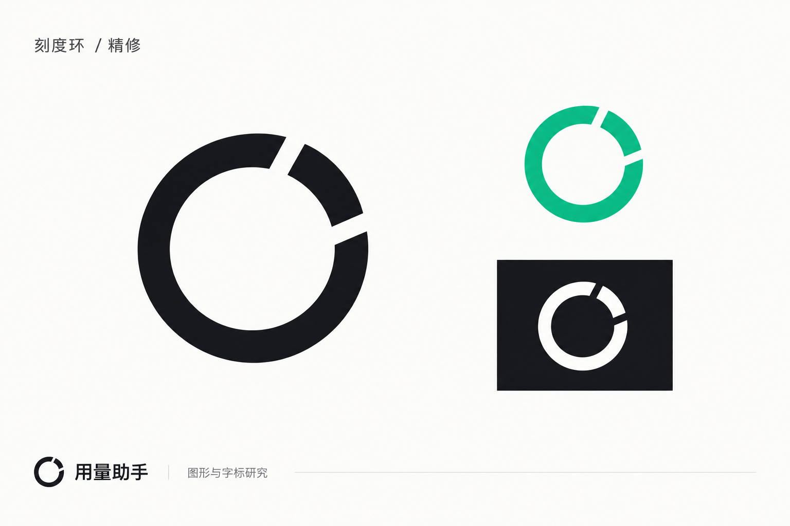

<!doctype html><html lang="zh-CN"><meta charset="utf-8"><title>刻度环 · 图标核对</title>
<style>
*{box-sizing:border-box}body{margin:0;background:#f8f8f7;color:#202224;font:14px system-ui,"Microsoft YaHei",sans-serif;padding:32px}main{max-width:980px;margin:auto}h1{font-size:21px;font-weight:600;margin:0 0 5px}p{color:#737579;margin:0 0 26px}section{display:flex;gap:32px;margin:20px 0 30px}figure{margin:0}figcaption{font-size:12px;color:#777;margin-top:12px}.source{position:relative;width:256px;height:256px;overflow:hidden;background:white}.source img{position:absolute;width:682.6667px;max-width:none;left:-90.6667px;top:-87.1111px}.master{width:256px;height:256px;background:#fff}.strip{display:flex;align-items:center;gap:28px;height:100px;padding:24px;border:1px solid #ddd}.strip.dark{background:#131416;border-color:#303236;color:#fff}.sample{display:flex;align-items:center;gap:28px}img{display:block}.white{filter:invert(1)}.title{color:#737579;font-size:12px;margin-bottom:8px}
</style><main><h1>刻度环 / 已应用</h1><p>1.8.0-beta.3 · 延续原 UI 的绿色与单色标识</p>
<section><figure><div class="source"></div><figcaption>确认稿主图 / 同比例裁切</figcaption></figure><figure><figcaption>矢量母版 / 保留切口与短弧</figcaption></figure><figure><figcaption>应用图标 / #10b981</figcaption></figure></section>
<div class="title">实际尺寸：16 / 20 / 24 / 32 / 48 px</div><div class="strip"><div class="sample"></div></div>
<div class="title" style="margin-top:20px">深色界面标识：17 px 悬浮窗 / 27 px 侧栏 / 30 px 加载</div><div class="strip dark"><div class="sample"></div></div>
</main></html>
